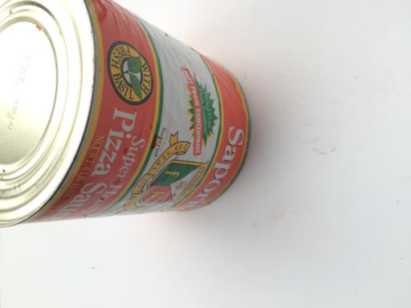

Waste Detector
What?
Technology has improved the quality of life and given birth to an advanced form of life. This has varying impact on the environment and other lives on the earth. For instance, water bottels made of plastic, which is convenient to use and carry but its disposal is a challenge for nature. There are lots of waste materials which are degradable and non- degradable.
Therefore, categorization and proper disposal of waste are necessary. Waste materials can be classified as biodegradable and non-biodegradable. Risk and threats related to waste disposals can be easily avoided by the knowledge on types of wastes.
Why?
The primary motivation for picking up this project is Mount Pirana, the gigantic heap of garbage in Ahmedabad which stands testimony to all that has gone wrong in keeping the city clean. There is a prime need for better waste management tool which can help us in creating a better lifestyle. With the advancement of smart cities, a project like this can be used purposefully to achieve a green city.
Since non-biodegradable are not Eco-freindly and cannot be decomposed, they must be segregated for further chemical treatments. Thus this application will help us to segregate biodegradable and non-biodegradable waste which will help in better waste management.
How?
Biodegradable waste - Plant products, wood, paper, food waste, leaves, grass.
Non - biodegradable waste - cans, bottles, plastic products, metal scraps, glasses, or plastic bags.
Biodegradable waste can be separated from non biodegradable waste by waste Segregation means dividing waste into dry and wet. Dry waste includes wood and related products, metals and glass. Wet waste, typically refers to organic waste usually generated by eating establishments and are heavy in weight due to dampness. Waste can also be segregated on basis of biodegradable or non-biodegradable waste.
Differences
- Biodegradable
- 1. These wastes can be broken down into non-poisonous substances by the action of microorganisms like bacteria and earthworms.
- 2. Biodegradable substances change their form and structure over time and become harmless.
- 3. biodegradable trash ends up in landfills, it breaks down more quickly than ordinary garbage does, suggests a new study. They do not pollute the environment.
- Examples: Spoilt food, vegetable peels, tea leaves, wood, grass, paper, leather, cotton, cattle dung etc.
- Non-biodegradable
- 1. These wastes cannot be broken down into harmless substances by any biological processes.
- 2. Non-biodegradable substances remain unchanged over a long period of time.
- 3. Some of them remain inert and begin to accumulate in our surroundings, while others cannot be made less toxic easily and hence keep on polluting the environment.
- Examples: Glass bottles, metal cans, polythene bags, synthetic fibres, radioactive wastes, plastics and pesticides like DDT etc.
Images
Biodegradable
Cardboard

Trash

Paper

Non - Biodegradable
Glass

Metal
Plastic